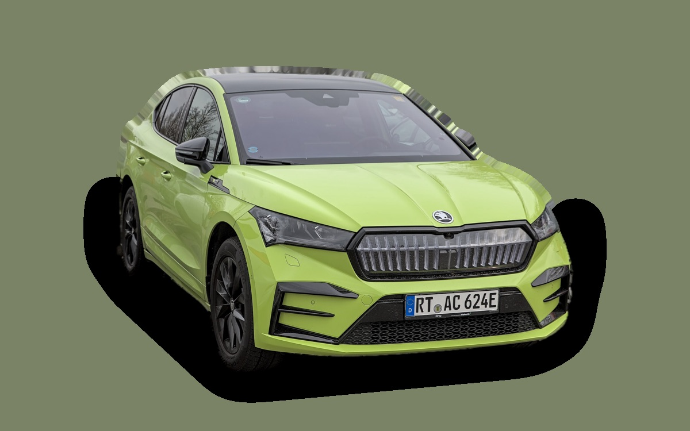

Vad kostar en Skoda Enyaq per månad?
En Skoda Enyaq från 2023 kostar cirka 3 046 kr i månaden, allt inräknat.


Månadskostnad per årsmodell
| Årsmodell | Version i beräkningen | Pris | Per månad | Betyg |
|---|---|---|---|---|
| 2026 | 85 (82 kWh), Selection | 575 600 kr | 5 743 kr | C |
| 2023 | 60 (62 kWh), Selection | 301 000 kr | 3 046 kr | A |
Räknat på 5 års ägande och 1 250 mil per år, med bränslepriser från 2026-10-22. Månadskostnaden innehåller värdeminskning, drivmedel, service och reparationer, försäkring och fordonsskatt.
Så fördelas kostnaden för en 2023:a
- Värdeminskning: 1 722 kr/mån
- Drivmedel: 419 kr/mån
- Service och reparationer: 330 kr/mån
- Försäkring: 545 kr/mån
- Fordonsskatt: 30 kr/mån
Leasa eller köpa ny?
Škoda Privatleasing erbjuder Enyaq 85 Solid Edition från 4 995 kr i månaden i 36 månader och 1 000 mil per år. Så mycket kostar det jämfört med att köpa samma bil ny för 575 600 kr och sälja den efter 36 månader, räknat på 1 250 mil per år och 5 procents ränta.
Leasa är billigast 1 589 kr mindre per månad, 57 204 kr på 36 månader.
| Per månad | Leasa | Köpa |
|---|---|---|
| Leasingavgift, 1 250 mil per år | 5 252 kr | – |
| Uppläggnings- och aviavgift | 73 kr | – |
| Värdeminskning | – | 4 641 kr |
| Ränta på pengarna, 5 % | – | 2 050 kr |
| Service och reparationer | ingår | 223 kr |
| Drivmedel | 406 kr | 406 kr |
| Försäkring | 770 kr | 770 kr |
| Fordonsskatt | 30 kr | 30 kr |
| Totalt per månad | 6 531 kr | 8 120 kr |
| Totalt på 36 månader | 235 116 kr | 292 320 kr |
Du kör 250 mil mer per år än erbjudandet räknar med. Märkets pris för fler mil: 258 kr i månaden. Škoda Privatleasing: Enyaq 85 Solid Edition, 36 månader, 1 000 mil per år, service ingår, rörlig avgift som följer räntan. Uppläggningsavgift 495 kr och aviavgift 59 kr i månaden. Källa: privatleasing.skoda.se, avläst 26 oktober 2026.
Köpa: 575 600 kr för en ny bil i samma version, och 408 518 kr tillbaka när du säljer den efter 3 år. Restvärdet bygger på annonspriserna för 3 år gamla bilar, justerat för att du kör 3 750 mil på 3 år i stället för typiska 7 200 mil. Räntan är vad pengarna kostar: ränta på ett billån, eller räntan du går miste om på sparade pengar. Drivmedel, försäkring och skatt är desamma. Övermil och onormalt slitage betalas när leasingbilen lämnas tillbaka, och byter du in en köpt bil hos en handlare får du oftast mindre än annonspriset.
Räkna med din egen körsträcka och ränta · Alla leasingbilar jämförda
Begagnatpriser i annonser
| Årsmodell | Medianpris | Annonser | Typiskt miltal |
|---|---|---|---|
| 2026 | 587 400 kr | 8 | 1 400 mil |
| 2025 | 484 500 kr | 19 | 4 200 mil |
| 2024 | 482 400 kr | 18 | 5 800 mil |
| 2023 | 389 900 kr | 81 | 7 500 mil |
| 2022 | 368 000 kr | 28 | 8 600 mil |
| 2021 | 294 800 kr | 11 | 10 900 mil |
Medianpriset i svenska annonser per årsmodell i oktober 2026 (källa: Blocket, AutoUncle). Annonspriser är utgångspriser, och slutpriset kan bli lägre.
Motorer och versioner
| Motor | Drivmedel | Effekt | 0–100 km/h | Förbrukning (WLTP) | Räckvidd | Årsmodeller | Pristillägg |
|---|---|---|---|---|---|---|---|
| 60 (62 kWh) | El | 204 hk | 8 s | 16,2 kWh/100 km | 418 km | 2021–2023 | – |
| 85 (82 kWh) | El | 286 hk | 6,7 s | 16 kWh/100 km | 580 km | från 2021 | +120 000 kr |
| 85x AWD | El | 286 hk | 6,7 s | 17,4 kWh/100 km | 540 km | från 2021 | +155 100 kr |
- Utrustning: Selection, Sportline (+49 000 kr), Laurin & Klement (+94 900 kr)
Fakta
- Kaross
- SUV
- Årsmodeller
- sedan 2021
- Nypris från
- 575 600 kr
- Bagage
- 585 liter
- Euro NCAP
- 5 av 5 stjärnor
- Nybilsgaranti
- 3 år
- Driftsäkerhet
- 3,5 av 5
- Helförsäkring, uppskattning
- 8 300 kr/år
- Service, uppskattning
- 2 600 kr/år
Fördelar och nackdelar
Fördel
Stort bagage och bra räckvidd för pengarna.
Nackdel
Förbrukningen ökar mycket i kyla.
Liknande bilar
 Tesla Model Y3 000 kr/mån som 2023:a
Tesla Model Y3 000 kr/mån som 2023:a Renault Captur3 129 kr/mån som 2023:a
Renault Captur3 129 kr/mån som 2023:a Toyota Corolla Cross3 141 kr/mån som 2023:a
Toyota Corolla Cross3 141 kr/mån som 2023:a Skoda Kamiq3 195 kr/mån som 2023:a
Skoda Kamiq3 195 kr/mån som 2023:a Peugeot 20083 276 kr/mån som 2023:a
Peugeot 20083 276 kr/mån som 2023:a Volkswagen T-Cross3 318 kr/mån som 2023:a
Volkswagen T-Cross3 318 kr/mån som 2023:a
Uppdaterad 2026-10-26 · annonsdata okt 2026